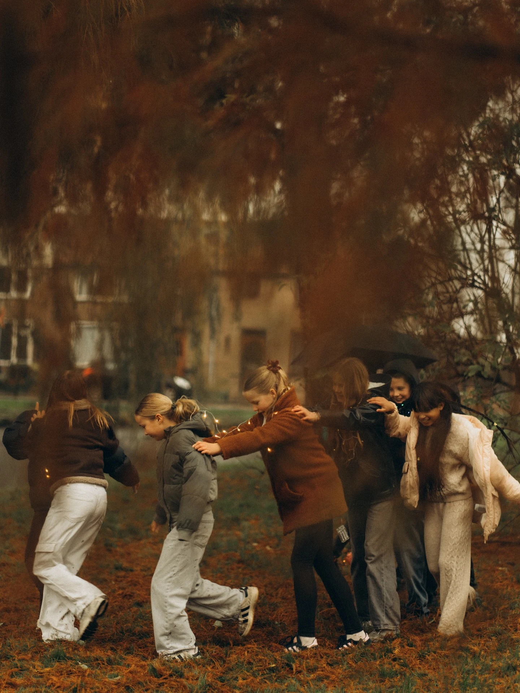

Little moments.
A whole childhood.
The running, the laughter, the very serious games. Photographs of children and families with space for everyone to be themselves.

A closer look.
Play, curiosity and the people who make a place feel like home. A small selection of childhood photographs.
A little direction.
A lot of you.
We build the session around your family rather than a long list of poses. A walk, a familiar game or simply spending time together gives us a place to start. There is room for breaks and for children to find their own way into the photographs.
I photograph children and families across the Netherlands, including The Hague, Delft, Rotterdam and Amsterdam. Tell me the ages of your children and what your family enjoys so we can choose a comfortable setting.
- A plan that considers your children’s ages
- Space for play, movement and small breaks
- A mix of individual and together moments
- Consistent, cinematic editing across the selection
approximately 60 minutes
Indicative pricing. Your final collection, delivery details and total are agreed before booking.
A feeling in motion.
Short films from the collection. Play to watch.
A few things
you may wonder.
What if my children don’t want to pose?
That is completely fine. Movement, play and small interactions can be more meaningful than everyone looking at the camera. We’ll follow their energy and take breaks when needed.
Can we bring our dog?
Tell me about your pet when we plan the session. We’ll consider whether the location allows dogs and how to keep the session comfortable for everyone.
Do you photograph larger families?
We can discuss extended-family sessions. Share the number of people and children’s ages so I can suggest suitable time, space and a tailored quote.
What should we bring?
Comfortable clothing and anything your children may need for a relaxed outing. Once we know the location and weather, we’ll agree the practical details.
Some moments
are worth keeping.
Tell me what you have in mind. A date, a place, a feeling — we’ll begin there.
Let’s make memories